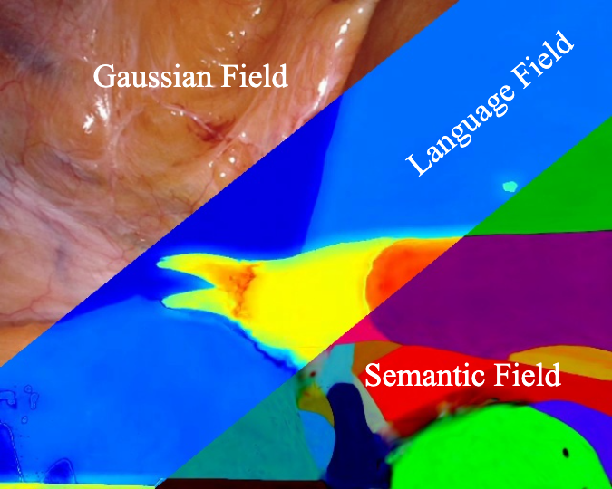

|
Wenxu Zhou I am a master student at University of Science and Technology of China, and supervised by Prof. Dong Yin in EEIS Department. Before that, I received my bachelor’s degree in Electronics Information Engineering at Anhui University. My research interests include 3D computer vision and medical image analysis. |
{kind=link}
Publications |

|
IL3D: A Large-scale indoor layout dataset for LLM-Driven 3D Scene Generation
Wenxu Zhou, Kaixuan Nie, Hang Du, Dong Yin, Wei Huang, Siqiang Guo, Xiaobo Zhang, Pengbo Hu arXiv, 2025 project page / arXiv / code / dataset IL3D, a large-scale dataset with 27,816 indoor layouts and 29,215 3D assets, supports LLM-driven 3D scene generation. It includes natural language annotations and rigorous benchmarks, enhancing the 3D scene generation task. |
|

|
Open-Vocabulary Endoscopic Scene Understanding via 4D Language Gaussian Splatting
Wenxu Zhou, Dong Yin BIBM, 2025 paper (will be published soon) / code EndoLGS, a 4D Language Gaussian Splatting for endoscopic scenes dynamic reconstruction and semantic understanding, shows significant potential for robot-assisted surgery. |
|
|
Endo2DGS: Endoscopic Scene Reconstruction with High-fidelity Geometry
Wenxu Zhou, Taoran Sun, Tianle Hu, Jiulin Li, Dong Yin PRCV, 2025 paper (will be published soon) Endo2DGS, a novel reconstruction framework for endoscopic scenes, addresses geometric inconsistencies in dynamic digestive tract modeling, achieving high-fidelity 4D reconstruction. |
Teaching |

|
Teaching Assistant Data Structure and Algorithm (210070.06) 2024 Fall, Undergraduate/ Major Course School of Information Science and Technology |
Academic Services |
| Conference Reviewer: PRCV, AAAI |
|
|